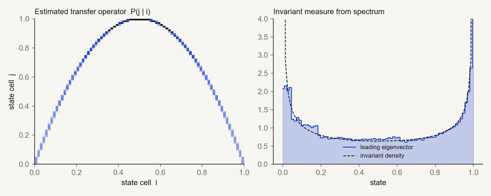
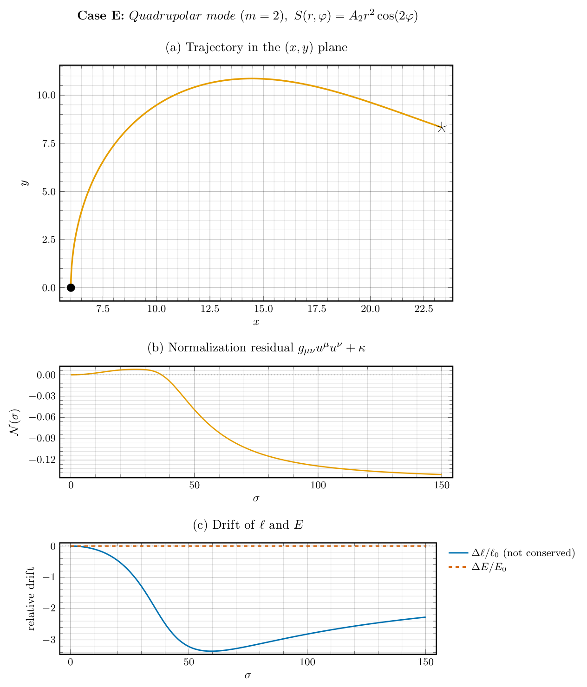
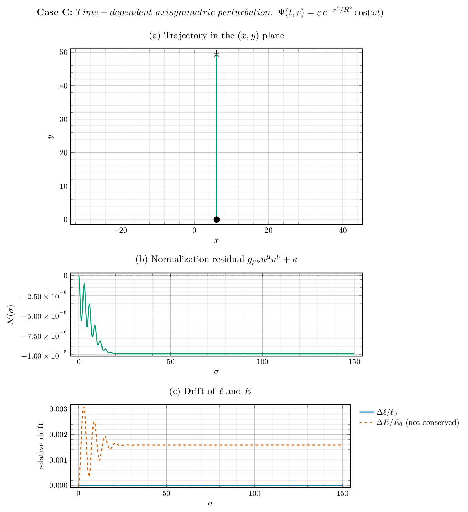

Scientific modeling and computational physics research spanning data-driven dynamical systems, structure-preserving numerical integration, differential geometry, and general relativity.
Contact Hamiltonian dynamics gives dissipative mechanics an intrinsic action variable, but the explicit contact splittings available today only reach kinetic energies whose terms are exactly integrable — frozen-coordinate diagonal metrics such as the spherical pendulum or a particle on a torus. Dense metrics with momentum cross terms, with the double pendulum as the flagship case, fall outside that class. This work introduces a projected Pihajoki–contact integrator for that non-separable setting.
MethodThe scheme combines phase-space duplication, symmetric projection onto the physical diagonal, and constant-friction damping half-steps, with the action factor carried by an exact Herglotz update. It requires no binding parameter, returns the duplicated copies to the diagonal at every step, and confines the nonlinear solve to the 2n projection variables. Under constant friction the step rescales the contact volume ω = dη by the exact factor e^(−γτ) when the projection is solved exactly, while time-symmetry, consistency, and smoothness yield an O(τ³) one-step residual in the contact form.
ResultsOn the damped double pendulum, spherical pendulum, and torus particle the method is second-order accurate, reproduces the contact decay law, and controls long-time energy and contact drift in coarse or stiff regimes where the Tao baseline and the unprojected average lose the solution. A head-to-head comparison against exact-contactomorphism splittings delimits the niche: where a frozen-coordinate splitting exists it preserves the contact form exactly and wins at matched cost, but for the dense double-pendulum metric the realizable alternative is first-order with a prohibitive constant and the projected method prevails.
AuthorsLorena Loera-Galeana, Santiago Mejía, Espartaco Alvarado, Héctor Medel-Cobaxín. Mathematical Physics (math-ph); Dynamical Systems (math.DS); Numerical Analysis (math.NA).
TopicsOngoing research on data-driven modeling of nonlinear dynamical systems. The work is methodological in nature, building models directly from measured time series and using them for analysis, forecasting, and control.
ToolboxKoopman and Perron–Frobenius (transfer) operator theory, time-delay embeddings in the HAVOK family, neural representations such as autoencoders, model predictive control, and probabilistic model validation. Applications and results are currently unpublished.
Tools
Research collaboration spanning the numerical study of geodesic perturbations in general relativity, and theoretical work on contact Hamiltonians and dissipative mechanics. The contact strand produced the projected semiexplicit integrator described above.
ApproachGeodesic equations are integrated numerically on curved geometries, with conservation diagnostics used to validate the trajectories and study the effect of metric perturbations. Analytical derivations are verified through computer algebra and complemented by numerical experiments in Python and Julia.
Tools
